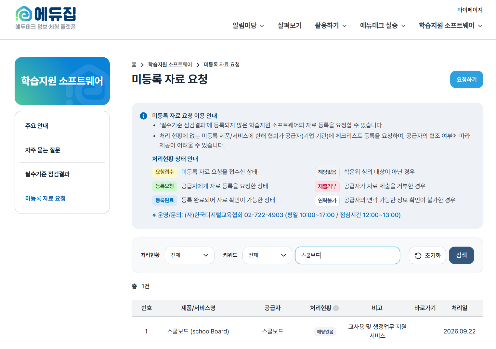
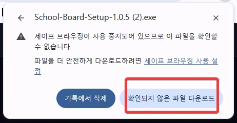
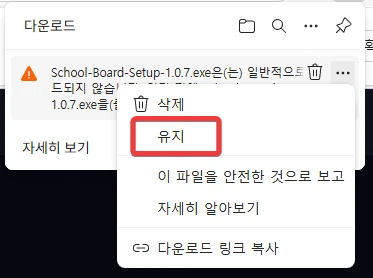
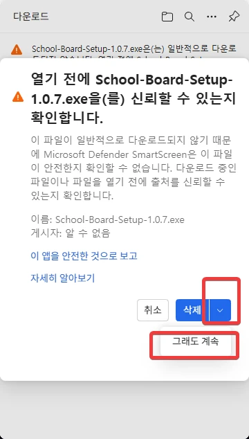

01
매일 쓰는 화면
켜 두기만 하면 오늘 수업, 급식, 일정, 할 일이 보여요. 출근해서 가장 먼저 여는 화면이에요.
- 위젯 30가지 넘게시계·날씨·D-Day·캘린더·시간표·급식·할 일·출결·QR 출결 현황·업무포털 현황까지 오른쪽 클릭으로 넣고 크기를 바꿔요.
- 바탕화면이 대시보드로위젯 모드를 켜면 바탕화면 아이콘 아래에 붙어 배경화면처럼 늘 보여요. 아이콘 클릭은 그대로 돼요.
- 용도별 대시보드업무용·수업용처럼 여러 개를 만들어 바꿔 쓰고, 두 개를 동시에 창으로 띄울 수도 있어요.
- 단축키 한 번Ctrl+Shift+F8로 어디서든 스쿨보드를 부르고, Ctrl+Shift+F7로 대시보드로 바로 가요.
- 내 눈에 맞게위젯마다 글자 크기를 바꾸고, 창 투명도와 위치 잠금도 정해요.
- 대시보드 창선생님용 대시보드는 그대로 두고, 교실용 대시보드를 창으로 하나 더 띄워 전자칠판으로 보내요.
- PIN 잠금학생이 누르거나 오른쪽 클릭해도 화면과 설정이 바뀌지 않게 잠가요.
- 오늘의 알림판메신저 공지나 알림장 글을 붙여 넣으면 아침활동·준비물·숙제·알림 카드로 알아서 나눠요. 모두 소리 내어 읽기도 돼요.
- 오늘의 한 문장날마다 바뀌는 366일 문장을 칠판처럼 띄워요.
- 대시보드마다 따로시계 디자인 15종, D-Day, 알림판, 위젯 글자 크기(60~500%)가 대시보드별로 저장돼요.
- 오늘 브리핑앱을 켜면 일정·할 일·수업·시간표 변경·상담·출결·급식·날씨·D-Day를 정리해 알려 줘요. 넣을 항목은 직접 골라요.
- 노크 알림과 하루 마무리수업·일정·상담·교무실 알림이 오면 노크하고, 마지막 수업이 끝나면 남은 할 일과 내일 일정을 알려 줘요.
- 심부름“내일 오후 3시 협의회 일정 추가해 줘”, “김민수 상점 2점 줘”처럼 적으면 일정·할 일·메모·누가기록·상벌점·출결을 넣어 줘요. 빠진 내용은 되물어요.
- 사용법 질문두 번 클릭하면 오늘 정보와 질문 창이 열려요. 스쿨보드 사용법을 물어보면 답해 줘요.
- 방해하지 않기수업 시간에는 알아서 숨고, 창 밖으로 꺼내면 바탕화면 펫이 돼요. 쉬는 시간엔 미니게임 5종도 있어요.
- 친구 셋째깍이(시계), 또박이(연필), 꼼꼼이(출석부)로 바꿀 수 있어요.
똑똑이째깍이또박이꼼꼼이
- 구글 캘린더·태스크 연동휴대폰 구글 캘린더에 넣은 일정이 스쿨보드에, 스쿨보드에 넣은 할 일이 구글 태스크에 그대로 보여요.
- 학사일정 자동NEIS 학사일정을 불러오고, 원하는 날은 D-Day로 바로 등록해요.
- 학교식 반복‘셋째 주 수요일’, ‘2주마다’, ‘N일마다’ 같은 반복을 종료일과 함께 넣어요.
- 엑셀 일괄 업로드연간 계획을 붙여 넣으면 오류·중복 의심 행을 미리 보여 주고 한 번에 올려요.
- 보기 방식월간·주간·N일 보기에 음력·24절기, 학생 생일까지 캘린더에 표시해요.
- 학교 급식 자동학교만 고르면 NEIS 급식이 매일 들어와요. 주간표로 한 주를 미리 봐요.
- 영양 정보칼로리와 탄수화물·단백질·지방을 함께 보여 줘요.
- 다른 학교·유치원도자녀 학교나 유치원 급식으로 바꿔 볼 수 있어요. 휴대폰은 급식 학교를 따로 정해요.
- 날씨와 대기질지역 날씨와 미세먼지·오존을 위젯으로 띄우고, 해외 도시도 골라요.
- 포스트잇 메모색과 글자 크기(6~120pt)를 바꾸고, 사진을 붙여 넣거나 끌어다 놓아요.
- 루틴매일 하는 일을 체크 목록으로 두면 자정에 저절로 초기화돼요.
- 폴더와 격자 배치메모를 폴더로 나누고, 자유 배치와 격자 배치 중에서 골라요.
- 메모 속 할 일메모에 넣은 할 일에 기한을 주면 캘린더에 체크 항목으로 떠요.
- 링크 넣기메모와 일정 설명에 링크를 넣어 바로 열어요.
- 블록 문서제목·체크리스트·표·콜아웃·2열·3열을 마크다운 단축 입력으로 빠르게 쓰고, @로 다른 페이지를 이어요.
- QR 배포게시 기간과 고정 QR 주소를 정해 학생 휴대폰에 학습지를 띄우고, 고친 내용은 같은 QR에 다시 반영해요.
- QR 인쇄 한 장제목·QR·안내 문구가 담긴 인쇄용 한 장을 바로 뽑아요.
- 내보내기Markdown·HTML·텍스트·PDF로 내보내고, 대시보드에 노트북 페이지를 띄워요.
02
학급관리
출결부터 자리, 상담, 생활기록부까지. 한 반의 1년이 한곳에 쌓여요. 담임반과 수업반을 함께 관리해요.
- 나이스 출결 일괄입력아직 나이스에 올리지 않은 출결만 모아 날짜별로 자동 입력하고, 다시 조회해 확인한 뒤 ‘나이스 반영’으로 표시해요.
- 안전장치나이스에 다른 값이 있으면 건너뛰기(기본)와 덮어쓰기 중에서 골라요. 나이스에서 지울 때도 같은 값만 지워요.
- 교시 자동 채우기지각은 조회부터 고른 교시까지, 조퇴는 고른 교시부터 종례까지 한 번에 채워요.
- 휴업일 반영NEIS 학사일정의 휴업일을 불러와 출결 집계에서 빼고, 다른 학급에도 복사해요.
- 출결 종합질병·미인정·기타·인정을 나눠 보고, 서류 제출을 체크하고, 결석일수가 넘치면 알려 줘요.
- 상시 스캐너한 번 켜 두면 학생이 찍은 시각으로 날짜와 교시가 자동으로 나뉘어요. 교시마다 출결을 새로 만들 필요가 없어요.
- 남는 휴대폰이 스캐너공기계를 교실에 두면 스캐너가 돼요. 앞·뒤 카메라 전환, 스캔음, 다른 반 QR 감지까지 해요.
- 지각 판정시작 N분 뒤는 지각으로, 쉬는 시간에 찍으면 다음 교시로 인정해요.
- 야자·방과후교시 밖 시간대를 만들고 요일마다 대상 학생을 다르게 정해요.
- QR 카드와 현황판학생 QR 카드를 A4에 한 번에 뽑고, 현황판과 대시보드 위젯에서 미체크 학생을 바로 봐요.
- 공정한 자동 배정고정석, 남녀 조건, 붙으면 안 되는 학생, 지난 짝 피하기, 학생 선호도까지 반영해요.
- 발표가 이벤트로3·2·1 카운트다운과 카드 섞기, 색종이와 함께 새 자리를 공개해요.
- 우리 교실 모양 그대로분단마다 열 수를 다르게 하고, 교탁 쪽에서 본 모양으로 돌려 봐요.
- 자리에서 바로 기록자리표에서 학생을 눌러 출결·누가기록·상벌점을 넣어요.
- 사진과 명렬표나이스 사진출석부 엑셀에서 사진을 한 번에 꺼내 붙이고, 자리표와 명렬표를 함께 출력해요.
- 바로 기록학생 목록에서 이름을 누르고 교과세특·행발 같은 분류로 관찰 내용을 남겨요.
- 상벌점상점·벌점을 사유와 함께 주고, 여러 학생에게 한 번에 넣어요. 나이스 입력 여부도 체크해요.
- 타임라인여러 학생 기록을 합쳐 보고, 걸러 본 그대로 인쇄·PDF·엑셀로 뽑아요.
- 학생 사진학생 사진을 등록해 두면 기록할 때 얼굴과 함께 봐요.
- 재료가 한곳에누가기록, 성취수준(초등), 학생이 QR로 낸 활동, 손글씨 OCR 결과를 학생별로 모아요.
- 내 문체 그대로작년에 쓴 생기부 예시와 쓸 서술어 목록을 넣으면 그 문체를 따라 써요.
- 학생마다 한 줄개인별 요구사항과 목표 바이트를 정하고, 여러 학생을 동시에 작성해요. 아직 안 쓴 학생만 골라 쓸 수도 있어요.
- AI 수정다 쓴 글을 학생별로 AI에게 다듬어 달라고 하고, 마음에 안 들면 되돌려요.
- 학생 이름은 빼고AI에는 학생 이름 없이 활동 내용과 요구사항만 보내요.
- PDF 한 번에 올리기NEIS 학교생활기록부Ⅱ PDF를 한꺼번에 올리면 학급 명단과 자동으로 짝지어요.
- 영역별 조회·분석교과성적, 세부능력 및 특기사항 같은 영역을 나눠 보고 역량을 분석해요. 중학교 생기부도 돼요.
- 진로·과목 설계와 입결상담에 필요한 진로·과목 설계와 대학·입결 조회를 같은 창에서 이어 봐요.
- 마감 전 생기부 점검NEIS 바이트 초과, 기재 금지 표현, 맞춤법, 다른 학생과 겹치는 문장을 찾아 표시해요.
- PC 안에서만생기부 PDF 분석은 컴퓨터 안에서만 처리하고 주민번호·주소 같은 항목은 읽지 않아요.
- 클릭으로 체크성취기준을 추가하고 학생마다 수준을 눌러 기록해요.
- 엑셀 일괄 업로드이미 엑셀로 정리해 둔 표는 그대로 붙여 넣어요.
- 생기부로 이어서생활기록부 정리에서 ‘활동내용 불러오기’를 누르면 체크한 성취수준을 가져와 초안을 써요.
- 공통설정과 개인별 요구사항내 문체와 학급 특색은 공통설정으로, 학생 한 명의 디테일은 한두 줄 요구사항으로 더해요.
- QR로 신청학생·학부모가 휴대폰으로 가능한 시간을 골라요. 학번·이름 확인 방식도 정하고, 게시 전에 학생 화면을 미리 봐요.
- 상담 시간 한 번에상담 시간을 일괄로 만들고, 같은 시간 중복 선택을 허용할지 정해요.
- 알림과 기록상담 몇 분 전에 소리·팝업으로 알려 주고, 결과와 교사 메모를 남겨요.
- 통계와 출력미신청 학생과 신청·완료·불참 이력을 보고, 결과를 엑셀·PDF로 뽑아요. 상담 일정은 캘린더에도 떠요.
- QR로 제출받기질문을 적고 게시하면 학생이 휴대폰으로 답을 내요. 여러 반에 동시에 게시하고 통계로 봐요.
- 일괄 업로드다른 곳에서 모은 활동도 한 번에 올려 학생별로 쌓아요. 다른 반에 활동을 복사할 수도 있어요.
- OCR 스캔손으로 쓴 보고서·수행평가 스캔 파일을 한꺼번에 골라 AI로 읽고 학생별 글자로 바꿔요.
- 생기부 재료로모은 활동과 OCR 결과는 생활기록부 정리에서 바로 불러와요.
학급관리
진도표와 학급 살림
담임과 교과 선생님의 자잘한 일까지 챙겨요.
진도표
반별 진도를 체크하고 엑셀로 정리해요. 반 사이로 끌어 옮기거나 복사하고, 대시보드에 진도 슬라이드로 띄워요.
학급·교과 그룹
담임반과 수업반을 그룹으로 묶어 관리하고, 지난 학급은 지우지 않고 숨겨 둬요.
명단과 사진
학생 명단을 엑셀로 불러오고 내보내요. 사진을 등록하고, 생일은 캘린더에 띄워요.
학급메모
학급마다 따로 쓰는 메모장이에요. 학급 일정은 D-Day로 등록해요.
03
업무 자동화
업무포털·나이스·에듀파인에서 반복하던 클릭을 스쿨보드가 대신해요. 선생님은 결과만 확인하면 돼요.
- 원클릭 접속Chrome이나 Edge로 업무포털에 들어가 인증서로 로그인하고 나이스·K-에듀파인까지 열어요.
- 우리 교육청 그대로교육청을 고르면 그 교육청 업무포털로 들어가요. 보안 프로그램이 준비될 때까지 기다렸다가 진행해요.
- 비밀번호는 내 PC에인증서 비밀번호는 선생님 PC에 암호화해서 저장해요.
- 자동화의 출발점나이스 출결 일괄입력, 복무 상신, 업무포털 현황, 원클릭 품의가 모두 자동 로그인 위에서 돌아가요.
- 나이스 알림 종나이스 ‘나의 할일’ 알림을 1분마다 확인해 빨간 숫자로 알려 줘요. 누르면 나이스의 그 화면이 바로 열려요.
- 세 시스템을 한 위젯에나이스 승인사항, K-에듀파인 전자결재, 교육행정데이터통합관리(교데통) 알림 숫자를 한곳에서 봐요.
- 숫자를 누르면 그 목록으로공람대기·결재함 숫자를 누르면 해당 목록이 바로 열려요.
- 로그인 유지앱이 켜져 있는 동안 업무포털 로그인을 자동으로 연장해요.
- 연결 테스트잘 안 되면 어느 단계에서 막히는지 한 단계씩 확인해요.
- 복무상신특별휴가(육아시간), 연가(연가·조퇴·외출·지각), 병가 종류를 고르고 사유를 적으면 끝이에요.
- 초과근무날짜·시간·할 일을 적으면 초과근무를 상신해요. 여러 날짜를 한 번에 올릴 수도 있어요.
- 결재선은 처음 한 번만‘스쿨보드1~8’ 개인결재선을 자동으로 등록해 두면 다음부터 알아서 골라요.
- 멈추면 알려 줘요중간에 멈추면 어느 단계에서 멈췄는지 알려 줘요.
- AI가 읽어요장바구니 캡처·견적서·품의 요구서를 AI가 읽어 품목 내역으로 정리해요.
- 품목내역 엑셀에듀파인에 올릴 품목내역 엑셀 파일을 만들어 줘요.
- 제목·개요 자동 입력에듀파인 품의등록 화면에 제목과 개요를 자동으로 넣어요.
- 확성기공지를 보내면 구성원 스쿨보드에 바로 떠요. 교무실을 열지 않고 타이틀바 종에서 바로 보내요.
- 학교일정·주간일정부서별로 지난 주·이번 주·다음 주를 한 표에 보고, 엑셀·PDF로 뽑아요. 일괄 입력도 돼요.
- 일일 알림“1학년 야자” 같은 항목을 만들어 매일·매주 반복으로 등록해요.
- 권한과 승인구성원별로 확성기·일정 편집 권한을 주고, 가입은 한 번에 승인해요. 휴대폰에서도 관리해요.
- 업무자료업무 관련 구글 시트·문서 주소를 모아 두고 앱 안에서 바로 열어요.
- 즐겨찾기자주 가는 사이트와 PC 속 파일·폴더를 바로가기로 모아요. 주소 여러 줄을 한 번에 넣어요.
- 대시보드 위젯파일·폴더 즐겨찾기를 대시보드에 띄워 바로 열어요.
04
문서·AI 도구
한글·PDF·이미지 작업을 앱 안에서 끝내요. 도구상자에서 바로 열고, 대시보드에 바로가기로 꺼내 둘 수도 있어요.
- 실시간 AI 편집열어 둔 한/글 문서에 “마지막 문단에 연락처 안내 넣어 줘”처럼 부탁하면 고칠 내용을 먼저 보여 주고, 승인하면 적용해요.
- AI 자동완성양식 전체를 이해해 작업 사본에 내용을 채워요. 원본은 그대로 둬요.
- 양식 채우기양식과 참고 자료를 합쳐 새 문서를 만들어요.
- 시험지 옮기기PDF나 이미지 시험지를 편집할 수 있는 HWPX 문서로 바꿔요.
- 나누고 고르고 합치기한꺼번에 스캔한 활동지를 일정한 쪽수로 나누고, 필요한 쪽만 뽑고, 원하는 순서로 합쳐요.
- 자르기·회전·대칭여백은 잘라 내고, 돌아간 페이지는 바로잡아요.
- 용량 줄이기첨부 용량이 클 때 PDF를 줄여요.
- 변환PDF↔이미지, 한글 문서→PDF·이미지를 한 번에 바꿔요.
- 예시 양식 23종수업 슬라이드, 인쇄용 문서, 카드뉴스, 학급 홈페이지 같은 웹 화면으로 바로 시작해요.
- PPT처럼 편집글·도형·이미지를 하나씩 골라 옮기고 고쳐요. 서식 복사·붙여넣기도 돼요.
- AI에게 부탁하기제작 프롬프트를 복사해 AI로 만들고, 고칠 개체를 골라 수정 요청문을 만들어요.
- 발표와 내보내기한 장씩 화면 가득 발표하고, 고해상도 PNG와 글자가 선택되는 PDF로 내보내요.
- 목표 용량 맞춤500KB처럼 원하는 용량을 넣으면 품질을 알아서 맞춰요.
- 일괄 처리최대 100장을 크기·형식·품질을 바꿔 ZIP으로 저장하고, 전후 용량을 보여 줘요.
- 모아 배치최대 18장을 격자로 놓아 행사 사진 보고용 한 장을 만들어요.
- 모자이크·번호 도장학생 얼굴을 가리고, 설명 자료용 번호를 찍어요. 흰 배경을 투명하게 바꿀 수도 있어요.
05
수업 도구
교실 화면에 바로 띄우는 도구예요. 학급 명단을 그대로 써서 준비할 게 없어요.
- 큰 화면 타이머전체화면으로 띄우고, 진행 막대를 끌어 남은 시간을 바로 바꿔요. +30초부터 +1시간까지 버튼으로 늘려요.
- 안내 문구활동 안내를 글꼴 10종과 색으로 꾸며 타이머와 함께 보여 줘요.
- 색과 소리남은 시간이 50%·20%가 되면 주황·빨강으로 바뀌고, 마지막 3초는 소리로 알려요.
- 수업 남은 시간지금 수업이 끝날 때까지 남은 시간도 바로 세어요.
수업 도구
랜덤 뽑기·모둠 편성
발표자 뽑기와 모둠 편성을 두근두근하게.
- 뽑는 순간이 재미있게점점 느려지다 ‘당첨!’과 함께 색종이가 터져요.
- 몰래 제외제외한 학생도 연출에는 그대로 나와서 누가 빠졌는지 학생들은 몰라요.
- 여러 명, 중복 없이여러 명을 한 번에 뽑고, 뽑힌 학생은 다시 안 나오게 해요. 회차별 당첨 기록도 남아요.
- 모둠 편성“4명씩”만 정하면 모둠 수를 알아서 나누고 결과를 복사해요.
- 발표 모드전체화면에 큰 QR을 띄워 참여를 받고, 결과는 가려 뒀다가 ‘결과 공개’로 보여 줘요.
- 조건부 질문앞 답에 따라 다음 질문이나 선택지를 바꿔요. 주관식 답의 낱말이나 숫자로도 나눠요.
- 기명 투표학급 명단으로 한 사람당 한 번만 받고, 아직 안 한 학생도 확인해요. 중복 참여는 자동으로 막아요.
- 예약과 자동 마감게시 시각과 마감을 정하고, 고정 QR 주소로 다시 써요.
수업 도구
학생이름외우기
학기 초, 학생 이름을 게임하듯 외워요.
- 사진·이름 퀴즈학생 사진을 보고 이름을 맞혀요. 서술형 퀴즈도 있어요.
- 연습 카드와 짝맞추기카드를 넘기며 익히고, 짝맞추기 게임으로 복습해요.
- 학급 명단 그대로학급관리에 등록한 명단과 사진을 바로 써요.
06
평가·교육과정
시험과 성적, 선택교과 업무를 계산부터 출력까지. 담당자 한 사람이 며칠 걸리던 일을 줄여요.
- 날짜 자동 배치고사실이 모자라지 않게, 학생 하루 시험 수와 학년별 빈 교시까지 따져 과목을 배치해요.
- 고사실 학생 배정교실별 인원을 정하면 학생을 버튼 한 번으로 배정해요. 학생은 엑셀로 한 번에 등록해요.
- 감독 조합 추천교사 명단을 붙여 넣으면 정·부감독 조합을 추천받아 공평하게 배정해요.
- 출력물 한 번에좌석 배치도, 고사실 명단, 학반별 배정표, 학생 안내표, 교사별 감독 시간표를 일괄 출력해요.
- 감독만 배정시간표와 고사실이 정해져 있다면 감독 배정만 할 수도 있어요.
- 분할점수 산출문항별 예상정답률을 넣으면 성취도별 분할점수를 계산해요.
- 역산기원하는 분할점수가 나오려면 어떤 값을 넣어야 하는지 거꾸로 계산해요.
- 학기말 성취도 예측지금까지의 점수로 학기말 성취도를 예측해 최소 성취수준 보장지도 대상 학생을 미리 찾아요.
- 붙여넣고 점검학생·수강 표를 붙여 넣으면 오류부터 찾아 줘요.
- 그룹 편성함께 듣기·피하기·배정 가능 반 조건을 넣고 선택 그룹을 편성해요. 여러 그룹을 동시에 피할 수도 있어요.
- 반배정나이스 성적표로 남녀 성적순 반배정을 하고, 두 학생을 눌러 서로 바꿔요.
- 결과 출력원본 양식에 맞춘 결과 엑셀과 교과별 수강자 명단을 뽑아요.
- 1분 완성교사 명단을 붙여 넣고 QR을 게시하면 끝이에요. 엑셀 제목과 명단을 한 번에 붙여 넣어도 돼요.
- 서명 현황서명 완료·미서명을 실시간으로 보고, 미서명자 명단을 복사해 메신저로 보내요.
- 양식 4종기본 등록부, 연수 참석부, 물품 수령 확인, 의견 수렴 중에서 골라요. 명단 없는 등록부도 돼요.
- 출력서명 그림까지 엑셀로 내보내고, 1~3단으로 인쇄해요.
07
어디서나·안심
집 PC, 학교 PC, 휴대폰이 같은 스쿨보드예요. 데이터는 선생님 PC와 선생님 Google Drive에 있어요.
- 교실에서 바로 기록출결, 누가기록, 자리배치, 상담을 폰에서 확인하고 남겨요.
- 앱처럼홈 화면에 추가하면 앱처럼 열려요. 홈 위젯 순서와 메뉴도 바꿔요.
- 폰에서도 QR 게시온라인 등록부와 학급활동모음을 폰에서 바로 열고, QR 출결 스캐너로도 써요.
- 바로 전화·문자연락처에서 바로 전화하고 문자를 보내요.
내 Google Drive 동기화
같은 Google 계정을 연결하면 기기끼리 자동으로 맞춰져요. 서로 다른 항목을 고치면 알아서 합치고, 같은 항목을 양쪽에서 고쳤을 때만 최근 수정으로 맞춰요. 밀려난 내용은 30일 동안 되살릴 수 있어요.
자동 백업
정한 주기마다 백업하고 며칠치를 보관해요. 비밀번호를 건 백업도 만들고, 연락처만·학급관리만 골라서 되살려요.
PIN 잠금
학급관리·연락처·설정처럼 고른 화면만 잠가요. 정한 시간이 지나면 다시 잠겨요.
프로필
한 PC를 여러 선생님이 써도 데이터·설정·Google 연결이 따로예요. .board 파일로 내 세팅을 동료에게 넘겨요.
엑셀로 내보내기
모든 데이터를 엑셀로 내보내고, 엑셀에서 고쳐 다시 불러와요.
- 기본은 내 PC에 저장
- 시간표, 메모, 할 일, 연락처, 학급 기록은 선생님 컴퓨터에 저장돼요. 업무포털 로그인 정보는 암호화해서 보관해요.
- 동기화는 내 Google Drive로
- 동기화를 켜면 선생님 본인의 Google Drive에 저장돼요. 스쿨보드가 만든 파일만 다루고, 개발자는 볼 수 없어요.
- 생기부 PDF는 PC 안에서만
- 학교생활기록부 PDF 분석은 컴퓨터 안에서만 처리하고, 주민번호·주소 같은 민감한 항목은 읽지 않아요.
- 공유 기능만 인터넷을 거쳐요
- QR 게시, 온라인 교무실처럼 함께 쓰는 기능과 선생님이 직접 실행한 AI 기능만 필요한 내용을 인터넷으로 보내요.
학교 도입 안내
스쿨보드는 학교운영위원회
심의 대상이 아니에요.
에듀집의 ‘미등록 자료 요청’ 처리 결과, 스쿨보드는 학교운영위원회(학운위) 심의 대상이 아닌 ‘해당없음’으로 안내돼요.
비고에 적힌 사유는 ‘교사용 및 행정업무 지원 서비스’예요. 아래 첨부 화면에서 처리 결과를 확인할 수 있어요.
출처: 에듀집 > 학습지원 소프트웨어 > 미등록 자료 요청
처리일: · 첨부 화면 기준

에듀집 처리 결과 · 이미지를 누르면 원본을 크게 볼 수 있어요.
1분 시작
처음 켜면 학교를 검색하고 테마를 고르는 안내가 나와요. 나머지는 쓰면서 채우면 돼요.
테마와 글꼴
테마 19종과 내 색 테마, 글꼴 7종, 12·24시간 표시 중에서 골라요.
메뉴 정리
안 쓰는 메뉴는 숨기고 순서를 바꿔 나만의 사이드바를 만들어요.
단축키와 창
단축키를 바꾸거나 끄고, 창 투명도·항상 위·위치 잠금을 정해요.
매달 새로워져요.
선생님들이 보내 주신 의견으로 계속 고치고 더하고 있어요. 앱은 자동으로 업데이트돼요.
지난 업데이트 전체 보기
영상으로 보기.
기능 시연부터 처음 설정하는 법까지 영상으로 정리했어요. 누르면 이 페이지에서 바로 재생돼요.
유튜브 채널에서 더 보기
지금 무료로
시작하세요.
Windows에 설치하고 학교 이름만 검색하면 준비 끝이에요. 새 버전은 자동으로 업데이트돼요.
Windows 10, 11에서 쓸 수 있어요. 설치 중 경고 창이 뜨면 바로 아래 안내를 따라 주세요.
설치가 막힐 때.
아직 코드 서명 전이라 브라우저와 Windows가 경고를 띄울 수 있어요. 보안에는 문제가 없으니 아래 순서대로 진행해 주세요.
1다운로드할 때 경고가 뜨면
‘확인되지 않은 파일 다운로드’ 창이 뜨면 [확인되지 않은 파일 다운로드]를 눌러 주세요.


‘파일을 안전하게 다운로드하시겠습니까?’ 창이 뜨면 [저장]을 눌러 주세요.



2설치할 때 ‘Windows의 PC 보호’가 뜨면
[추가 정보]를 누른 뒤 아래에 나타나는 [실행]을 누르면 설치가 시작돼요.
3‘스마트 앱 컨트롤’이 설치를 막으면
설치 파일이 실행되지 않고 스마트 앱 컨트롤이 막았다는 안내가 뜨면, 작업 표시줄의 검색이나 시작 메뉴에서 스마트 앱 컨트롤을 검색해 열어 주세요. 띄어쓰기까지 똑같이 입력해야 찾을 수 있어요.
‘앱 및 브라우저 컨트롤 > 스마트 앱 컨트롤’ 화면에서 [끄기]를 고른 뒤 설치 파일을 다시 실행하면 돼요.
그 밖에 자주 묻는 문제
학교운영위원회(학운위) 심의를 받아야 하나요?
스쿨보드는 학운위 심의 대상이 아니에요. 에듀집 ‘미등록 자료 요청’에서 ‘교사용 및 행정업무 지원 서비스’로 분류되어 처리현황이 ‘해당없음’으로 안내돼요. 처리 결과와 첨부 화면 확인하기
설치 파일을 눌러도 아무것도 실행되지 않아요
Windows 11의 스마트 앱 컨트롤이 막고 있을 수 있어요. 시작 메뉴에서 ‘스마트 앱 컨트롤’을 검색해 [끄기]를 고른 뒤 다시 실행해 주세요. 그림으로 보기
실행했는데 창이 안 보이거나 투명하게 보여요
화면 오른쪽 아래 트레이에서 스쿨보드 아이콘을 오른쪽 클릭하고 불투명 안전 모드를 켜 주세요. 흰 배경의 일반 창으로 다시 열려요.
급식이나 학사일정이 안 보여요
설정 > 일반에서 학교가 제대로 선택돼 있는지, 인터넷이 연결돼 있는지 확인해 주세요. 그래도 안 되면 새로고침(↻) 버튼을 눌러 보세요.
집 컴퓨터와 학교 컴퓨터에서 같이 쓰고 싶어요
설정 > 데이터 관리 > Google 동기화에서 같은 Google 계정을 연결하면 자동으로 맞춰져요. 인터넷 없이 옮기려면 .board 파일로 내보낸 뒤 다른 컴퓨터에서 불러오세요.
한 컴퓨터를 여러 선생님이 함께 써요
사이드바에서 프로필을 추가하세요. 프로필마다 데이터, 설정, Google 연결이 따로 저장돼요.
업데이트는 어떻게 하나요?
새 버전이 나오면 앱이 알아서 받아 설치해요. 설치 파일을 다시 받을 필요는 없어요.
그래도 문제가 생겼어요
설정 > 정보 > 오류 보고에서 로그 파일을 확인할 수 있어요. 사이드바의 고객센터에 문의를 남겨 주시면 빠르게 도와드릴게요.